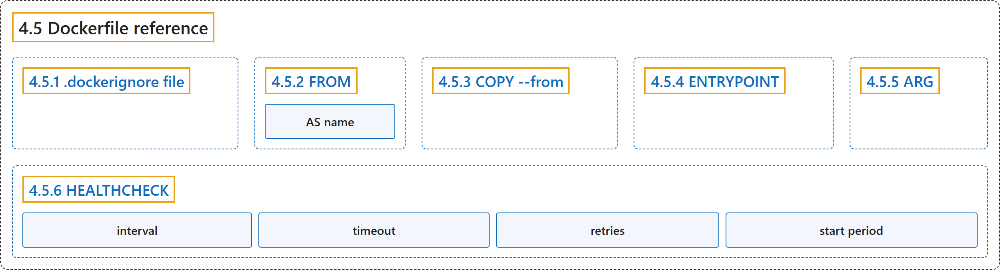

4.5 Dockerfile reference
Classification

Glossary
| Term | Definition | 中文翻译 | Source |
|---|---|---|---|
| 4.5 Dockerfile reference Dockerfile |
(No definition) | （无定义） | Docker Inc., n.d., "Dockerfile reference", documentation menu |
| 4.5.1 .dockerignore file .dockerignore 文件 |
"You can use .dockerignore file to exclude files and directories from the build context." |
你可以用 .dockerignore 文件来排除文件和目录，使其不进入构建上下文。 |
Docker Inc., n.d., ".dockerignore file", para. 1 |
| 4.5.2 FROM FROM 指令 |
"The FROM instruction initializes a new build stage and sets the base image for subsequent instructions." |
FROM 指令初始化一个新的构建阶段，并设置基础镜像，供后续指令使用。 |
Docker Inc., n.d., "FROM", para. 3 |
| AS name 命名构建阶段 |
"Optionally a name can be given to a new build stage by adding AS name to the FROM instruction." |
可以选择为新的构建阶段命名，方法是在 FROM 指令后加上 AS name。 |
Docker Inc., n.d., "FROM", para. 6 |
| 4.5.3 COPY --from 从其他来源复制 |
"The COPY --from flag lets you copy files from an image, a build stage, or a named context instead." |
COPY --from 标志让你改为复制文件，来源是镜像、构建阶段或命名上下文。 |
Docker Inc., n.d., "COPY --from", para. 1 |
| 4.5.4 ENTRYPOINT ENTRYPOINT 指令 |
"An ENTRYPOINT allows you to configure a container that will run as an executable." |
ENTRYPOINT 让你配置一个容器，使其像可执行程序一样运行。 |
Docker Inc., n.d., "ENTRYPOINT", para. 1 |
| 4.5.5 ARG ARG 指令 |
"The ARG instruction defines a variable that users can pass at build time to the builder with the docker build command using the --build-arg <varname>=<value> flag." |
ARG 指令定义一个变量，用户可以在构建时把它传给构建器，方法是在 docker build 命令中使用 --build-arg <varname>=<value> 标志。 |
Docker Inc., n.d., "ARG", para. 1 |
| 4.5.6 HEALTHCHECK HEALTHCHECK 指令 |
"HEALTHCHECK [OPTIONS] CMD command (check container health by running a command inside the container)" |
HEALTHCHECK [OPTIONS] CMD command（检查容器健康状况，方法是在容器内运行命令） |
Docker Inc., n.d., "HEALTHCHECK", para. 2 |
| interval 检查间隔 |
"The health check will first run interval seconds after the container is started, and then again interval seconds after each previous check completes." | 健康检查在容器启动 interval 秒后首次运行，之后在每次检查完成 interval 秒后再次运行。 | Docker Inc., n.d., "HEALTHCHECK", para. 12 |
| timeout 单次超时 |
"If a single run of the check takes longer than timeout seconds then the check is considered to have failed." | 如果单次检查耗时超过 timeout 秒，这次检查就算失败。 | Docker Inc., n.d., "HEALTHCHECK", para. 13 |
| retries 重试次数 |
"It takes retries consecutive failures of the health check for the container to be considered unhealthy." |
健康检查连续失败 retries 次后，容器才被视为 unhealthy。 |
Docker Inc., n.d., "HEALTHCHECK", para. 14 |
| start period 启动宽限期 |
"start period provides initialization time for containers that need time to bootstrap." | start period 提供初始化时间，给需要时间启动的容器。 | Docker Inc., n.d., "HEALTHCHECK", para. 15 |
References
Docker Inc. (n.d.). Dockerfile reference. Docker Docs. Retrieved November 2, 2026, from https://docs.docker.com/reference/dockerfile/